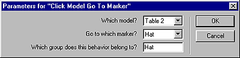
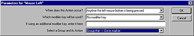

What's New in Director 8.5 > Director 8.5 Tutorial > Use 3D behaviors for navigation > Select the action and trigger for the Hat marker
What's New in Director 8.5 > Director 8.5 Tutorial > Use 3D behaviors for navigation > Select the action and trigger for the Hat marker |
Select the action and trigger for the Hat marker
You'll repeat the procedure to add the Click Model Go to Marker action behavior and trigger behavior for the middle table.
1 |
Drag the Click Model Go to Marker behavior from the Cast window to the Magic tricks sprite. |
2 |
In the Parameters for Click Model Go to Marker dialog box, specify the following: |
In the "Which model?" pop-up menu, select Table 2. |
|
In the "Go to which marker?" pop-up menu, select Hat. |
|
In the "Which group does this behavior belong to?" text box, type Hat. Then click OK.
 |
|
3 |
In Cast window, drag the Mouse Left behavior to the Magic tricks sprite. |
4 |
In the Parameters for Mouse Left dialog box, specify the following: |
In the "When does this action occur?" pop-up menu, verify that "Anytime the left mouse button is being pressed" is selected. |
|
Verify that "No modifier key" appears in the second text box and that the third text box is blank. |
|
In the Select a Group and Its Action pop-up menu, select Group Hat - Go to Marker. Then click OK.
 |
|